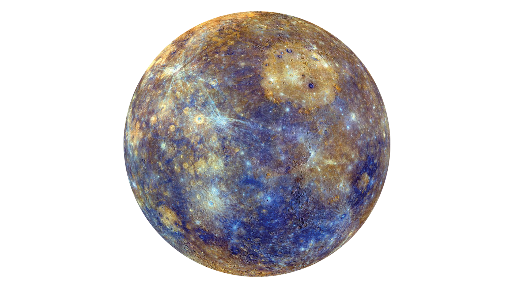

Меркурий (Mercury)
Күнге ең жақын планета: Системалық сипаттама
Меркурий — Күн жүйесіндегі Күнге ең жақын және ең кішкентай планета. Оның беті Айға ұқсас кратерлермен (шұңқырлармен) жабылған және оның өте жұқа экзосферасы бар. Күнге жақын орналасуына байланысты, Меркурийдегі температура күндіз өте ыстық, ал түнде өте суық болады, бұл үлкен ауытқуды көрсетеді.
Қызықты Деректер (DATA ARRAY)
Кішкентай Планета:
Меркурий — Күн жүйесіндегі ең кішкентай планета, оның диаметрі Айдан сәл ғана үлкен.
Үлкен Температура Айырмашылығы:
Күндіз температура 430 °C-қа дейін көтерілсе, түнде -180 °C-қа дейін төмендейді.
Қысқа Жыл:
Ол Күнді толық айналып шығу үшін тек 88 Жер тәулігі қажет етеді.
Әлсіз Магниттік Өріс:
Меркурийдің магниттік өрісі бар, бірақ оның күші Жердегіден 100 еседей әлсіз.
Су Мұзы:
Сенерсіз, бірақ Меркурийдің кейбір мәңгі көлеңкелі кратерлерінде су мұзы болуы мүмкін.
Айналу/Орбита:
Оның айналу және Күнді айналу қатынасы 3:2. Яғни, ол Күнді екі рет айналған кезде, өз осінен үш рет айналып үлгереді.